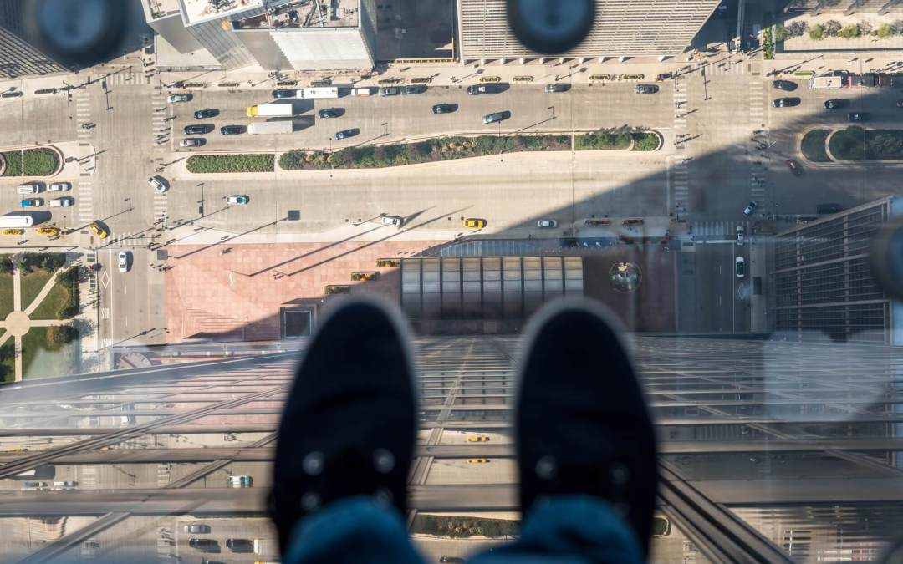

Qualificação acadêmica Ensino Fundamental Instituto Educacional Renata Castro Manaus, AM - Brasil 2008-2009
Escola Estadual Isabel Barroncas Manaus, AM - Brasil 2010-2010
Escola Estadual Helena Araújo Manaus, AM - Brasil 2011-2012
CETI Gilberto Mestrinho Manaus, AM - Brasil 2013-2016 Ensino Médio Fundação Matias Machline Manaus, AM - Brasil
2017- Até o presente momento
Histórico de Experiência Acadêmica Projeto e desenvolvimento de software desktop Fundação Matias Machline
Matéria : Linguagem de programação 2 Função: Projetar e desenvolver o software
Mar/2018 - Dez/2018
Cursos relevantes A internet das coisas - Fundamentos de IoT - Microsoft Virtual Academy
Fundamentos de Tecnologia - Microsoft Virtual Academy
Outras áreas de interesse Psicologia Fascinado por edição de vídeos
Maior medo em vida

Eu não me lembro quando adquiri esse medo,mas quando fico em locais muito altos onde eu consigo enxergar o chão, entro em estado de desespero.
O dia em que tive a maior sorte na vida Eu estava voltando para casa depois de mais um dia de aula na Fundação Matias Machline em 2017,
quando avistei meu ônibus na parada, eu teria que atravessar os dois lados da BR-329 em questão de segundos,
então dei o sinal para atravessar, um micro-ônibus e um carro pararam, porém faltava mais um carro parar e o micro-ôninus
atrapalhava a visão da via em que faltava o carro, mesmo assim eu corri na faixa e de repente eu parei (eu senti que eu deveria parar),
no mesmo momento passou um carro em alta velocidade quase encostando em mim, atravessei o outro lado da BR com o coração na
garganta, ao chegar na parada percebi que não era o meu ônibus, esse incidente foi um grande ensinamento para mim em relação à pressa.
Animal de estimação Eu gosto de alguns animais, principalmente gatos, porém não tenho nenhum pois meus pais não permitem animais em casa.
Time de coração Não tenho time.
Heróis Meu herói fictício é o capitão américa, porque ele é um exemplo de força de vontade, ele surgiu no fundo do poço com uma determinação enorme
e hoje ele faz o que sonhava Meus heróis reais são meus pais, meu pai e nem minha mãe não tiveram uma vida muito fácil, porque minha avó paterna teve muitos filhos, então ela não conseguia sustentar tudo,
então meu pai começou a trabalhar bem jovem,ele estudou bastante. Minha mãe nasceu em um interior do Ceará, minha avó materna teve muitos filhos, eles tinham que trabalhar bastante no roçado para apenas sobreviver. Juntando
esses fatos eu afirmo que eles são dois guerreiros, atualmente eles oferecem uma vida ótima para mim e ao meu irmão.
Músicas favoritas Fudasca - her smile is the reason why i'm still trying
Imfinenow - But I Still Get Social Anxiety Attacks
Imfinenow - But Through My Ups and Downs
Ocean - 17 (Shiloh Remix)
Pixies - Where Is My Mind
Vídeos do youtube favoritos
Sonhos Eu sonho em concluir minha vida acadêmica relacionada à informática e resolver problemas da sociedade usando meus conhecimentos e dar uma vida melhor para os meus pais no futuro.
Escolha do curso e da FMM Eu escolhi a FMM pois participei de um preparatório da fundação em que todos os professores eram ex-alunos da FMM, e todos eles se esforçavam para nos ensinar o que sabiam, pois eles queriam que nos tivéssemos as mesmas oportunidades que eles tiveram, antes de entrar na fundação eu não
entendia muito o porquê de tudo isso,mesmo assim me esforçei. A escolha do curso foi porque eu sempre mexi em computadores, eu nem sabia o que estava por vir, e hoje eu gosto muito do curso.